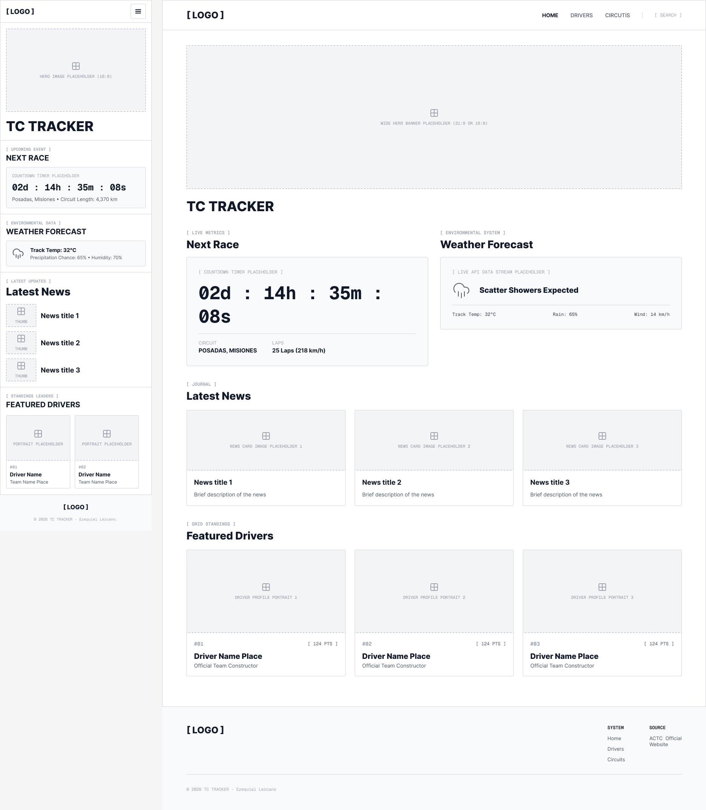

Midnight Navy — #101827
Used for headings, navigation, footer, and primary text.
WDD 231 Individual Project
A planning document for a Turismo Carretera racing information website.
TC Tracker
TC Tracker was selected because it is short, memorable, and immediately communicates that the site helps followers track Turismo Carretera, Argentina's premier touring car championship.
Optional domain: tctracker.ar
TC Tracker will provide a central, easy-to-read source for Turismo Carretera fans. The site will present the next race countdown, circuit information, weather conditions, current driver standings, featured drivers, and the latest championship news. It will help fans quickly find the key details they need before and during each race weekend.
Used for headings, navigation, footer, and primary text.
Used for calls to action, highlights, labels, and active states.
Used for the page background and card surfaces.
Used for secondary text, borders, and supporting information.
Montserrat — headings, navigation, buttons, race metrics, and other high-impact labels.
Source Sans 3 — body copy, card descriptions, weather details, and general interface text.
The wireframe below shows the responsive home-page layout for both small and large views. It includes a mobile menu, hero image, next-race area, weather information, news cards, featured drivers, and a shared footer.
